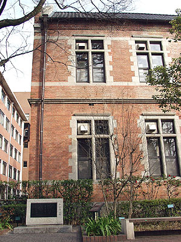
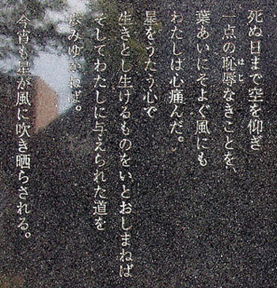

|
（2007.1.28 撮影）

同志社大学今出川キャンパス礼拝堂近くに、抵抗詩人 尹東柱（ユン・ドンジュ）の詩碑が建つ。 その詩碑等によると、尹東柱は1917年（大正6年）12月30日、中国吉林省瀧井郊外の明東村に生まれた。ソウルの、現在でいう延世 大学を卒業後、1942年（昭和17年）日本へ渡航、同志社大学文学部に学んだ。その在学中の1943年（昭和18年）7月14日、母国語で詩 を書いていたことを理由に、従兄弟の京大生・宋夢奎（ソン・モンギュ）と共に民族独立運動の疑いで京都下鴨警察署に逮捕された。 裁判の結果、二人とも治安維持法違反で懲役刑を宣告され、福岡刑務所に投獄。そして尹東柱は1945年（昭和20年）2月16日、福岡 刑務所で獄死した。死する前、看守には意味不明だったが、母国語でひと言叫んで亡くなったという。まだ27歳だった。

伊吹氏により訳詩された「死ぬ日まで空を仰ぎ」の空とは天であり、つまりは神を示している。
詩碑にもあるように「鮮烈な民族愛とキリスト教信仰と心やさしき童心とが溶け合った尹東柱の詩は同胞ばかりでなく、民族を越えて
人々の心を打つ」。
|